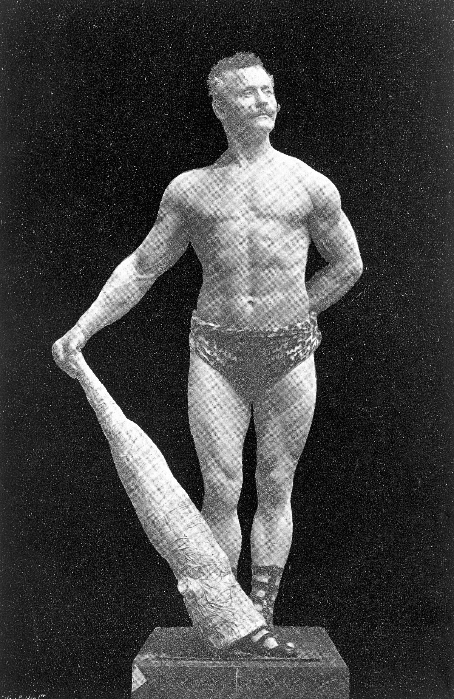

Who am I
A man who is probably not at the middle of his life quite yet, but swiftly approaching it. Do you like analogies? When I clean my windows, I am not a window cleaner, I am simply cleaning my windows. When I cut my grass, I am not a gardener, I am simply cutting my grass. When I am bodybuilding, I am not a bodybuilder, I am simply building muscle. This is because my vocation is not window cleaning, it is not gardening either, nor is it bodybuilder. But that doesnt mean that my windows are dirty, or that my grass is overgrown, or that my muscles are small and weak. But I have the cleanest windows on my street, I also have the most striped lawn on my street, and I also have the biggest muscles on my street too. This is because when I apply the fundemental principles to these activities, I foster the mind-set allowing me to do these activities to the best of my abilities.


*The rebirth of the bronze era man*
Eugen Sandow (1867-1925) was a pioneering figure in the world of physical culture and bodybuilding, often hailed as the "Father of Modern Bodybuilding. Inspired by the sculptures of ancient Greece and Rome, he set out on a quest to sculpt his own body into a work of art. What truly set Sandow apart, though, was his focus on aesthetics and balance in physique development. He believed that a well-proportioned and aesthetically pleasing body was the epitome of physical fitness. Sandow organized one of the world's first bodybuilding competitions in 1901, which marked a pivotal moment in the history of the sport.
Tools for the job
As this guide is all about building muscle at home on a budget, I will detail what equipment to avoid buying, what is the cheapest yet most quality you can buy on a budget, and making the best out of what you already have. I will show you what equipment you can make, and we will be looking at utilising everyday items in your home as muscle building tools. I started off with cheap vinyl and sand filled weights for the first couple of months. Eventually I upgraded to iron plates as they are smaller and heavier than vinyl plates. Vinyl is typically twice the size, for just half the weight as iron. Not such much good on dumbbells though, as they won’t be heavy enough for the large amount of real estate they use. That doesn`t mean that vinyl plates have no purpose though, as they mix easily with iron plates on long curl bars, so long as they are the same diameter hole in the middle. But like I said, I will be discussing what to look for with a typical price guide, and where to source quality weights.


What is weighlifting
Ok, so I’m assuming that you are the average Joe, so weightlifting may only mean pragmatically picking weights up, then setting them back down, and that is a good start as that means that your mind is in the right place. Many people will give up at the first hurdle, but speaking as a natural weightlifter, I assure you that if you apply the correct principles of weightlifting, within one or two weeks you will see and feel the results. Of course, sculpting your body is a lifelong journey, but when you get your first muscle pump, that bulging tightness in the bicep, that numb heavy feeling in your arms, you will be encouraged to rinse and repeat. The length and breadth involved in training methods is vast yet nuanced, as these complexities all share lifting weight, then setting them back down in different ways.
Let me briefly explain the differences of weightlifting, as this guide is all about weightlifting at home on a budget, I assume you must work with lighter weights and limited equipment. In which case I will be demonstrating variations of weightlifting which are mostly conducive to bodybuilding principles. So, if you were to Google Eddie Hall and Chris Bumstead, you will clearly see a massive physical difference. Eddie Hall is a British former professional strongman. He is best known for winning the 2017 World's Strongest Man competition. Eddie Hall is also famous for setting a world record in the deadlift by lifting 500 kg, which is what the average weight of an adult horse. He doesn’t look like a bodybuilder; he looks like a strong man. This powerhouse stands at 6`3, and at his competitive peak he weighed in at 189kg (417lbs). Contrastingly, C`Bum has a well-defined and peeled physique, who is the four-time classic physique Mr. Olympia winner. He stands at 6`1, with a stage weight of 120kg (230lbs), and it doesn’t really matter how much he can lift, it matters how he lifts, as he lifts weights for bodybuilding. Of course, there is a correlation with strength and size, but my point is, you cannot train like a modern-day strongman competitor when you only have access to light weights. Having said this, when you apply bodybuilding principles to your training, you will get strong in the process of building well sculpted muscles.

hello